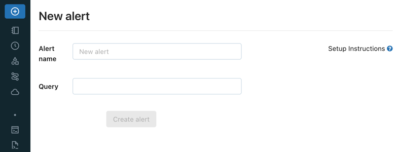
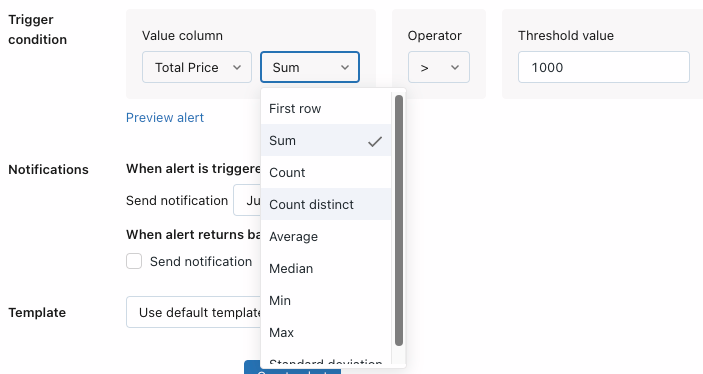
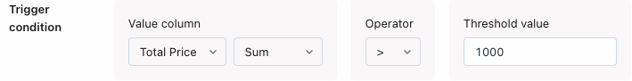
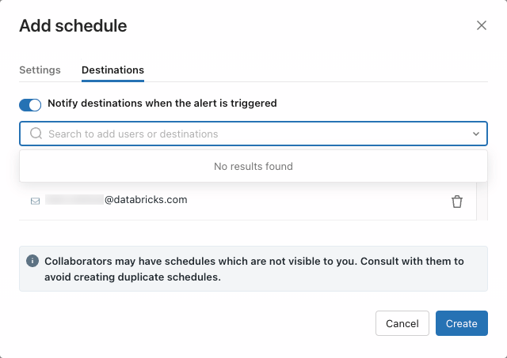
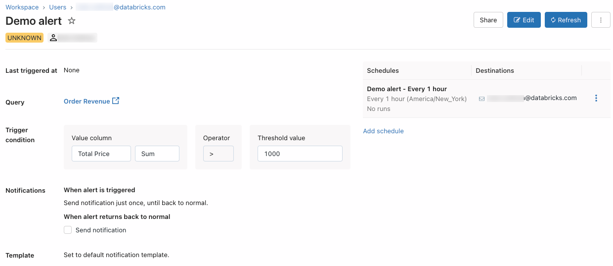

What are Databricks SQL alerts?
Databricks SQL alerts periodically run queries, evaluate defined conditions, and send notifications if a condition is met. You can set up alerts to monitor your business and send notifications when reported data falls outside of expected limits. Scheduling an alert executes its underlying query and checks the alert criteria. This is independent of any schedule that might exist on the underlying query.
Important
Alerts leveraging queries with parameters use the default value specified in the SQL editor for each parameter.
View and organize alerts
Alerts can be viewed in one of two ways:
New alerts can now be viewed in the workspace browser by clicking
 Workspace in the sidebar. These alerts are viewable, by default, in the Home folder. Users can organize alerts into folders in the workspace browser along with other Databricks objects. To view and organize currently existing alerts in the workspace browser, users (or admins) must migrate them into the workspace browser. For information about the Databricks SQL workspace browser, including migration, see Workspace browser.
Workspace in the sidebar. These alerts are viewable, by default, in the Home folder. Users can organize alerts into folders in the workspace browser along with other Databricks objects. To view and organize currently existing alerts in the workspace browser, users (or admins) must migrate them into the workspace browser. For information about the Databricks SQL workspace browser, including migration, see Workspace browser.All alerts, regardless of creation time or migration status, can be viewed by clicking Alerts in the sidebar.
By default, objects are sorted in reverse chronological order. You can reorder the list by clicking the column headings.
Name shows the string name of each alert.
State shows whether the alert status is
TRIGGERED,OK, orUNKNOWN.Last Updated shows the last updated time or date.
Created at shows the date and time the alert was created.
TRIGGEREDmeans that on the most recent execution, the Value column in your target query met the Condition and Threshold you configured. If your alert checks whether “cats” is above 1500, your alert will be triggered as long as “cats” is above 1500.OKmeans that on the most recent query execution, the Value column did not meet the Condition and Threshold you configured. This doesn’t mean that the Alert was not previously triggered. If your “cats” value is now 1470, your alert will show asOK.UNKNOWNmeans Databricks SQL does not have enough data to evaluate the alert criteria. You will see this status immediately after creating your Alert and until the query has executed. You will also see this status if there was no data in the query result or if the most recent query result doesn’t include the Value Column you configured.
Create an alert
Follow these steps to create an alert on a single column of a query.
Do one of the following:
Click
 New in the sidebar and select Alert.
New in the sidebar and select Alert.Click Alerts in the sidebar and click the + New Alert button.
Click
Workspace in the sidebar and click + Create Alert.Click the
 kebab menu in the upper-right corner of a saved query and click + Create Alert.
kebab menu in the upper-right corner of a saved query and click + Create Alert.
In the Query field, search for a target query.
To alert on multiple columns, you need to modify your query. See Alert aggregations.
In the Trigger condition field, configure the alert.
The Value column drop-down controls which field of your query result is evaluated. Alert conditions can be set on the first value of a column in the query result, or you can choose to set an aggregation across all the rows of a single column, such as SUM or AVERAGE.
The Operator drop-down controls the logical operation to be applied.
The Threshold value text input is compared against the Value column using the Condition you specify.
Click Preview alert to preview the alert and test whether the alert would trigger with the current data.
In the When alert is triggered, send notification field, select how many notifications are sent when your alert is triggered:
Just once: Send a notification when the alert status changes from
OKtoTRIGGERED.Each time alert is evaluated: Send a notification whenever the alert status is
TRIGGEREDregardless of its status at the previous evaluation.At most every: Send a notification whenever the alert status is
TRIGGEREDat a specific interval. This choice lets you avoid notification spam for alerts that trigger often.
Regardless of which notification setting you choose, you receive a notification whenever the status goes from
OKtoTRIGGEREDor fromTRIGGEREDtoOK. The schedule settings affect how many notifications you will receive if the status remainsTRIGGEREDfrom one execution to the next. For details, see Notification frequency.In the Template drop-down, choose a template:
Use default template: Alert notification is a message with links to the Alert configuration screen and the Query screen.
Use custom template: Alert notification includes more specific information about the alert.
A box displays, consisting of input fields for subject and body. Any static content is valid, and you can incorporate built-in template variables:
ALERT_STATUS: The evaluated alert status (string).ALERT_CONDITION: The alert condition operator (string).ALERT_THRESHOLD: The alert threshold (string or number).ALERT_COLUMN: The alert column name (string).ALERT_NAME: The alert name (string).ALERT_URL: The alert page URL (string).QUERY_NAME: The associated query name (string).QUERY_URL: The associated query page URL (string).QUERY_RESULT_TABLE: The query result HTML table (string).QUERY_RESULT_VALUE: The query result value (string or number).QUERY_RESULT_ROWS: The query result rows (value array).QUERY_RESULT_COLS: The query result columns (string array).
An example subject, for instance, could be:
Alert "{{ALERT_NAME}}" changed status to {{ALERT_STATUS}}.You can use HTML to format messages in a custom template. The following tags and attributes are allowed in templates:
Tags:
<a>,<abbr>,<acronym>,<b>,<blockquote>,<body>,<br>,<code>,<div>,<em>,<h1>,<h2>,<h3>,<h4>,<h5>,<h6>,<head>,<hr>,<html>,<i>,<li>,<ol>,<p>,<span>,<strong>,<table>,<tbody>,<td>,<th>,<tr>,<ul>Attributes: href (for
<a>), title (for<a>,<abbr>,<acronym>)
Click the Preview toggle button to preview the rendered result.
Important
The preview is useful for verifying that template variables are rendered correctly. It is not an accurate representation of the eventual notification content, as each notification destination can display notifications differently.
Click the Save Changes button.
Click Create Alert.
Click Add Schedule.
Use the dropdown pickers to specify the frequency, period, starting time, and time zone. Optionally, select the Show cron syntax checkbox to edit the schedule in Quartz Cron Syntax.
Choose More options to show optional settings. You can also choose:
A name for the schedule.
A SQL warehouse to power the query. By default, the SQL warehouse used for ad hoc query execution is also used for a scheduled job. Use this optional setting to select a different warehouse to run the scheduled query.
Click the Destinations tab in the Add schedule dialog.
Use the drop-down to select an available notification destination. Or, start typing a username to add individuals.
Important
If you skip this step you will not be notified when the alert is triggered.
Click Create. Your saved alert and notification details appear on the screen.
Share the schedule.
To the right of the listed schedule, choose the
kebab menu and select Edit schedule permissions.Choose a user, group, or service principal from the drop-down menu in the dialog.
Choose Can View to allow the selected users to view the results of scheduled runs.
Important
Permissions for alerts and schedules are separate. Grant access to users and groups in the notifications destinations list so they can view scheduled run results.
For more information on schedule permissions, see Share Databricks SQL dashboards
Share the alert.
Click
 near the top-right of the page.
near the top-right of the page.Add users or groups who should have access to the alert.
Choose the appropriate permission level, then click Add.
Important
Can Manage grants permission to view, modify, and delete schedules. This permission is required in order to make changes to the run interval, update the notification destination list, and pause or unpause the schedule.
For more information on controlling access to an alert, see Share alerts.
Alert aggregations
An aggregation on an alert works by modifying the original SQL of the Databricks SQL query attached to the alert. The alert wraps the original query text in a common table expression (CTE) and performs a wrapping aggregation query on it to aggregate the query result.
As an example, a SUM aggregation on an alert attached to a query with text SELECT 1 AS column_name means that whenever the alert is refreshed, the modified SQL that runs would be: WITH q AS (SELECT 1 AS column_name) SELECT SUM(column_name) FROM q.
This means that the original query result (pre-aggregated) cannot be shown in an alert custom body (with parameters such as QUERY_RESULT_ROWS and QUERY_RESULT_COLS) whenever there is an aggregation on an alert. Instead, those variables will only display the final, post-aggregation query result.
Note
All trigger conditions related to aggregations are not supported by the API.
Alert on multiple columns
To set an alert based on multiple columns of a query, your query can implement the alert logic and return a boolean value for the alert to trigger on. For example:
SELECT CASE WHEN drafts_count > 10000 AND archived_count > 5000 THEN 1 ELSE 0 END
FROM (
SELECT sum(CASE WHEN is_archived THEN 1 ELSE 0 END) AS archived_count,
sum(CASE WHEN is_draft THEN 1 ELSE 0 END) AS drafts_count
FROM queries) data
This query returns 1 when drafts_count > 10000 and archived_count > 5000.
Then you can configure the alert to trigger when the value is 1.
Notification frequency
Databricks SQL sends notifications to your chosen notification destinations whenever it detects
that the Alert status has changed from OK to TRIGGERED or vice versa.
Consider this example where an Alert is configured on a query that is scheduled
to run once daily. The daily status of the Alert appears in the following table.
Prior to Monday the alert status was OK.
Day |
Alert Status |
|---|---|
Monday |
OK |
Tuesday |
OK |
Wednesday |
TRIGGERED |
Thursday |
TRIGGERED |
Friday |
TRIGGERED |
Saturday |
TRIGGERED |
Sunday |
OK |
If the notification frequency is set to Just Once, Databricks SQL sends a
notification on Wednesday when the status changed from OK to TRIGGERED and
again on Sunday when it switches back. It does not send alerts on Thursday,
Friday, or Saturday unless you specifically configure it to do so because the
Alert status did not change between executions on those days.
Configure alert permissions and transfer alert ownership
To configure who can manage and run alerts and to transfer an ownership of an alert, see Share alerts.